دليل مصوّر لكل أفراد البيت: كيف نشاهد، وكيف نحمي الصغار.
بلا إعلاناتبلا خوارزميةبلا تسجيل دخولملفات للأطفالوقت محدد للمشاهدةالجوال ريموتاً
للاستخدام الشخصي في هذا البيت فقط تطبيق يوتيوب خاص بتلفاز TCL بنظام Google TVالطبعة الأولى · سبتمبر 2026
كتيّب شاشةالمحتويات
كتيّب شاشة
المحتويات
اقرأ «للجميع» مرة واحدة، وارجع إلى «ركن الوالدين» حين تضبط ملفات الأطفال، وإلى «عند الحاجة» حين يتعطل شيء.
للجميع
ما هي «شاشة»؟3
البداية السريعة: التثبيت باختصار4
أول تشغيل5
الريموت في «شاشة»6
الرئيسية7
الاشتراكات والاستيراد8
البحث والقنوات وقوائم التشغيل9
المشغّل10
الاستكمال، وشاهد لاحقاً، والسجل11
فيديوهات الأطفال، وتخطي المقاطع12
الإعدادات13
النسخ الاحتياطي والتحديثات14
الجوال ريموتاً15
ركن الوالدين
الملفات وملف الطفل18
إدارة الملفات ورمز الوالدين19
قوائم السماح والحظر20
الوقت: الحصة وأوقات المشاهدة21
قفل الفيديو22
الحارس و«حالة الحماية»23
الإحصائيات، وقائمة المراجعة24
عند الحاجة
عندما يتعطل يوتيوب25
أسئلة شائعة27
تنبيه قانوني وخصوصية28
كيف تقرأ هذا الكتيّب
تحديث زر أو عنصر تختاره على الشاشة.
«انتهى الوقت» نص تكتبه الشاشة نفسها.
OKBACKHOME↑↓←→ أزرار الريموت.
السهم ← بين كلمتين يعني «ثم»: الإعدادات ← حول تعني: افتح الإعدادات، ثم اختر حول.
في الصور المرقّمة، شرح كل رقم تحت الصورة أو بجانبها، باللون نفسه.
الدليل الكامل
هذا الكتيّب ملخص مصوّر. الشرح الكامل، فصلاً فصلاً، في «دليل استخدام شاشة» داخل المستودع: docs/manual. وخطوات التثبيت بالصور في «دليل التثبيت»: docs/install-guide.md.
أربعة أشياء تكفي لتبدأ
تهت؟
اضغط BACK عدة مرات حتى تصل إلى «الرئيسية».
احفظ لوقت آخر
OK مطوّلاً على فيديو ← شاهد لاحقاً
رمز الوالدين
للوالدين وحدهم: يفتح الوقت والإعدادات وملف الكبار.
«يوتيوب غيّر شيئاً»؟
جرّب فيديو آخر، ثم فحص التحديثات (ص 25).
كتيّب شاشةللجميع
للجميع
ما هي «شاشة»؟
«شاشة» تطبيق يوتيوب خاص بتلفاز بيتنا. يعرض ما تختاره أنت فقط: قنواتك، وما تبحث عنه. بلا إعلانات، وبلا اقتراحات، وبلا تسجيل دخول. واجهته عربية كلها، وتُدار بأسهم الريموت.
بلا إعلانات ولا اقتراحات
«الرئيسية» فيها أحدث ما نشرته قنواتك فقط.
ملفات للأطفال
لا يرى الطفل إلا ما في قائمة سماحه. ولا بحث عنده.
وقت محدد
حصة يومية وأوقات مشاهدة لكل ملف، وتنبيه قبل النهاية.
قفل الفيديو
كل فيديو يبدأ مقفولاً حتى ينتهي.
الحارس
يعيد «شاشة» إلى الواجهة ما دام ملف طفل مفتوحاً.
الجوال ريموتاً
أرسل الروابط، وابحث، وافتح الوقت من الجوال.
تخطي المقاطع
يتخطى الإعلانات المقروءة داخل الفيديو، ببيانات SponsorBlock.
بياناتك عندك
كل شيء على التلفاز نفسه. لا حسابات ولا تتبّع.
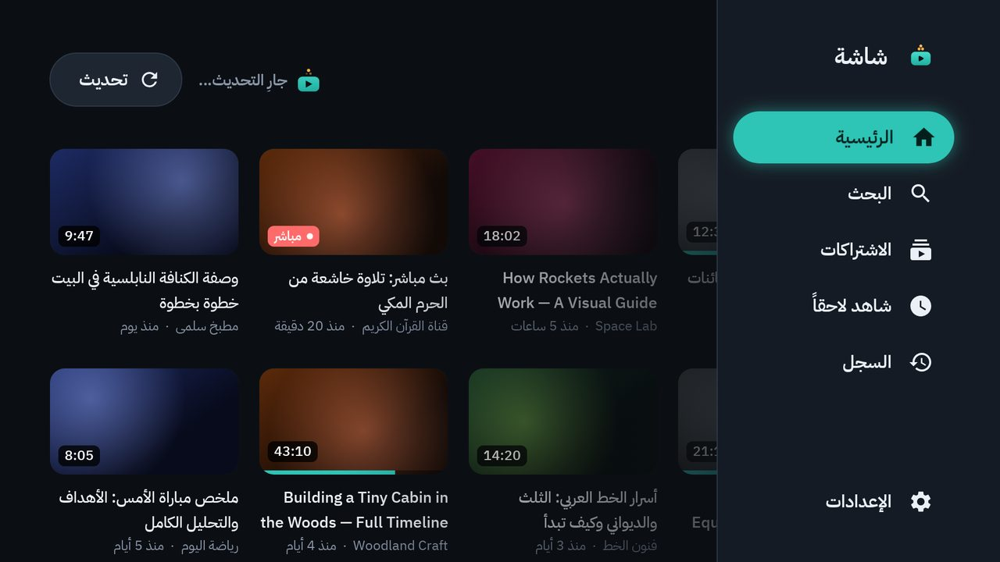
الرئيسية: أحدث ما نشرته قنواتك، من الأحدث إلى الأقدم. وعلى اليمين القائمة الجانبية.
وما ليست «شاشة»
لا تسجيل دخول بحساب غوغل، أبداً.
لا «مقترح لك»، ولا «شائع»، ولا فيديوهات ذات صلة، ولا تعليقات.
لا تشغيل تلقائي، إلا داخل قائمة تشغيل.
لا تنزيل، ولا تشغيل في الخلفية.
ليست في Google Play، ولا تُوزَّع لأحد.
ليست محصّنة من تغييرات يوتيوب: تتعطل أحياناً حتى يصدر إصلاح (ص 25).
ملفّان، وقواعد مختلفة
ملف الكبار
ملف الطفل
الدخول
برمز الوالدين
بلا رمز
الخروج
حر
برمز الوالدين
ما يظهر
كل يوتيوب، عدا المحظور
قائمة سماحه فقط
البحث والإعدادات
نعم
لا
الخروج من فيديو قبل نهايته
ضغط مطوّل عشر ثوانٍ، ثم كتابة جملة
برمز الوالدين
الحصة وأوقات المشاهدة
إن أردت
من البداية: ساعة يومياً، من 7 صباحاً إلى 10 مساءً
الحارس
أثناء قفل فيديو، وعند انتهاء الوقت أو خارج أوقاته
طوال الوقت: تبقى «شاشة» في الواجهة
كتيّب شاشةللجميع
البداية السريعة
التثبيت باختصار
يثبّت «شاشة» شخص واحد، مرة واحدة، من حاسوب شخصي، في نحو ربع ساعة. هذا ملخص فقط: الخطوات كاملة بالصور في «دليل التثبيت».
نزّل مجلد التثبيتالحاسوب
من صفحة مستودع «شاشة» اضغط Shasha-Setup.zip، ثم «Download». فك الضغط: في ويندوز بزر الفأرة الأيمن، ثم «Extract All». وفي ماك انقر الملف مرتين. فيه كل شيء، ولا تنزّل غيره.
فعّل خيارات المطوّرالتلفاز
افتح Settings، ثم System، ثم About. اضغط OK سبع مرات على «Android TV OS build».
فعّل تصحيح الأخطاءالتلفاز
افتح Settings، ثم System، ثم Developer options، وفعّل «USB debugging»، و«Network debugging» إن وجدته.
اعرف عنوان التلفازالتلفاز
افتح Settings، ثم Network & Internet، ثم اسم شبكتك، واقرأ «IP address»، مثل 192.168.1.50. اكتبه على ورقة.
شغّل المثبّتالحاسوب
ويندوز: انقر مرتين على «Windows - ثبّت شاشة». وإن حذّر SmartScreen فاختر «More info»، ثم «Run anyway». ماك: انقر بزر الفأرة الأيمن على «Mac - ثبّت شاشة»، ثم «Open»، ثم «Open» مرة ثانية. اكتب عنوان التلفاز حين يسألك.
وافق على التلفازالتلفاز
تظهر «Allow USB debugging?»: فعّل «Always allow from this computer» ثم «OK»، خلال 60 ثانية.
انتظرالحاسوب
يثبّت المثبّت «شاشة» ويمنحه صلاحياته، ويسألك إن أردت إيقاف يوتيوب الرسمي (اختياري)، ثم يفتحه ويعرض ملخصاً.
أول تشغيلالتلفاز
رمز الوالدين، ثم ملفك، ثم ملف لطفلك (الصفحة التالية).
الجوال، إن أردتالجوال
امسح رمز QR الظاهر على التلفاز بكاميرا الجوال (ص 15).
ما تحتاجه
تلفاز البيت: TCL بنظام Google TV.
حاسوب شخصي: ويندوز أو ماك.
شبكة Wi-Fi واحدة للاثنين.
ربع ساعة، مرة واحدة.
في مجلد Shasha-Setup
التطبيق، والمثبّت لويندوز ولماك، والأداة التي تكلّم التلفاز، ودليل التثبيت PDF: «اقرأني - طريقة التثبيت».
إن رُفض الاتصال
وفي التلفاز «Wireless debugging» فقط: اختر فيه «Pair device with pairing code»، ويسألك المثبّت عن العنوان والرمز المكوّن من 6 أرقام.
حاسوب العمل؟
الحاسوب الذي يمنع تشغيل البرامج لا يصلح غالباً. استعمل حاسوباً شخصياً.
التراجع
شغّل المثبّت بخيار التراجع (في الدليل). أو احذف التطبيق: Settings، ثم Apps، ثم «شاشة»، ثم Uninstall.
الدليل الكامل بالصور
«دليل التثبيت» في المستودع: docs/install-guide.md. ونسخته PDF داخل مجلد التثبيت نفسه: «اقرأني - طريقة التثبيت».
كتيّب شاشةللجميع
البداية السريعة
أول تشغيل
عند فتح «شاشة» أول مرة تمر بخمس خطوات قصيرة، كلها بالريموت.
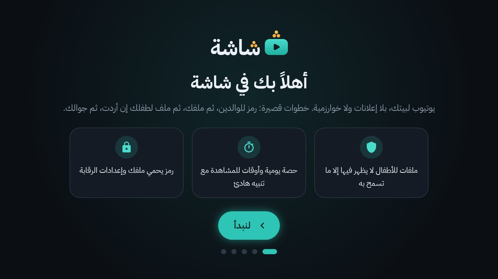
1 · «أهلاً بك في شاشة»: اضغط OK على لنبدأ
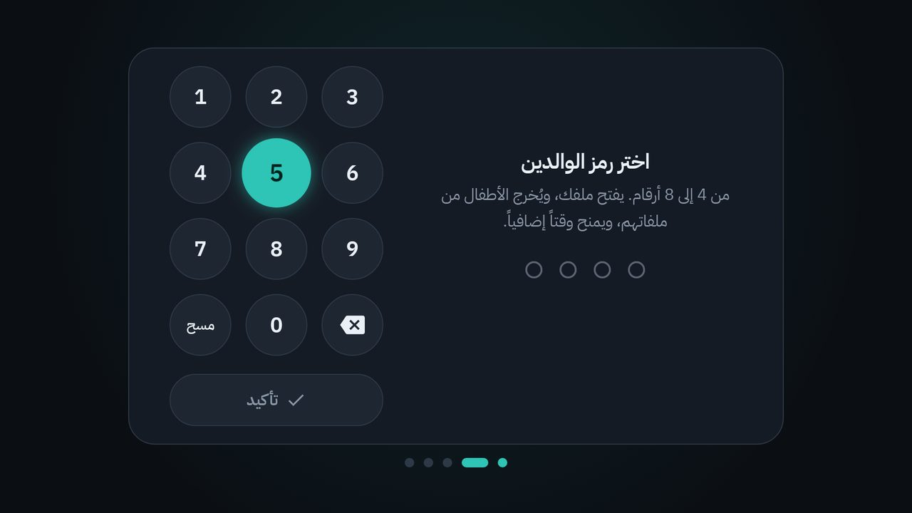
2 · «اختر رمز الوالدين»: من 4 إلى 8 أرقام، ثم تأكيد، ثم أعده مرة ثانية.
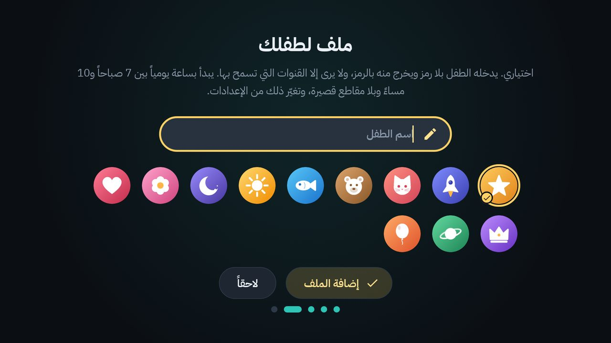
4 · «ملف لطفلك»: الاسم والصورة، ثم إضافة الملف، أو لاحقاً
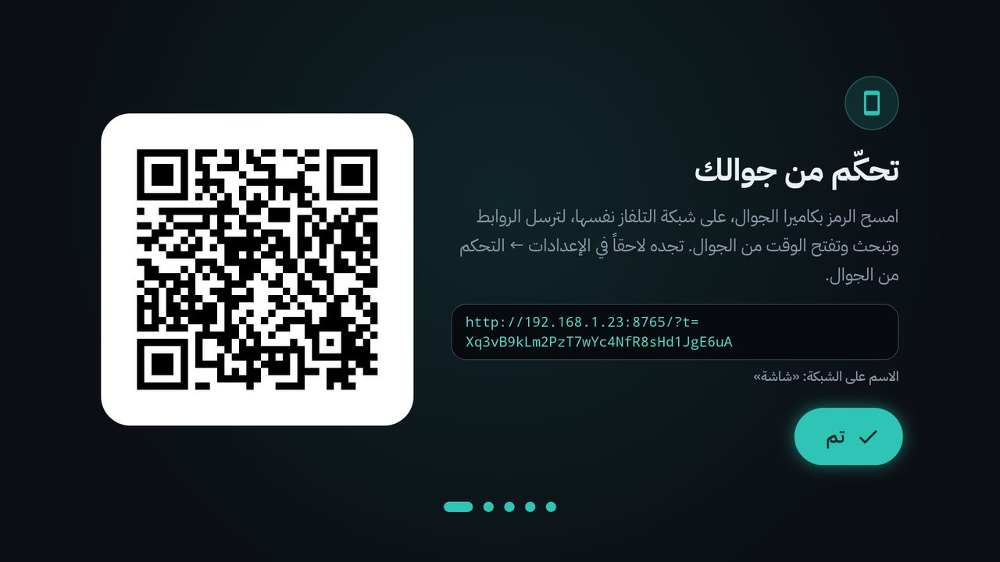
5 · «تحكّم من جوالك»: امسح الرمز الآن أو لاحقاً، ثم تم
3 · «ملفك» بين الخطوتين 2 و4: اكتب اسمك واختر صورة، ثم التالي. هذا ملف الكبار، ولا يُفتح إلا بالرمز.
رمز الوالدين: مفتاح البيت
يفتح ملف الكبار وإعدادات الرقابة، ويُخرج الأطفال من ملفاتهم، ويمنح وقتاً إضافياً. احفظه جيداً، ولا تخبر به الأطفال. خمس محاولات خاطئة متتالية توقفه 5 دقائق، ثم 15 دقيقة، ثم ساعة، ثم 4 ساعات. ولا يوجد «نسيت الرمز» داخل التطبيق (ص 27).
ملف الطفل يبدأ هكذا
ساعة مشاهدة يومياً، من 7 صباحاً إلى 10 مساءً، بلا مقاطع قصيرة، وبقائمة سماح فارغة: لا يرى الطفل شيئاً حتى تضيف له قنوات (ص 20). وتضيف أطفالاً آخرين متى شئت.
«من يشاهد الآن؟»
إن كان في «شاشة» ملف طفل، تبدأ كل مرة بهذه الشاشة. ملفات الأطفال تُفتح مباشرة بضغطة OK، وملف الكبار (عليه «بالرمز») يطلب رمز الوالدين.
كل شيء يصل إليه بالأسهم وزر OK. العنصر المختار عليه إطار فيروزي مضيء (أصفر في ملف الطفل): حرّكه بالأسهم، ثم اضغط OK.
الأسهم ↑↓←→: تحرّك الإطار بين البطاقات والأزرار.
OK: يختار ما عليه الإطار. ومطوّلاً: قائمة البطاقة (في ملف الكبار).
BACK: يرجع خطوة. من المحتوى إلى القائمة الجانبية، ثم إلى «الرئيسية»، ثم خارج «شاشة».
HOME: إلى واجهة التلفاز. وفي ملف الطفل يعيد الحارس «شاشة» خلال ثانية أو ثانيتين.
MENU، إن كان في ريموتك: مثل OK المطوّل.
أزرار التشغيل: تشغّل وتوقف وتقدّم في المشغّل، ولو كانت الأدوات مخفية.
الأرقام: تكتب رمز الوالدين مباشرة.
رسم توضيحي: أماكن الأزرار في ريموت التلفاز قد تختلف.
تهت؟
اضغط BACK عدة مرات حتى تصل إلى «الرئيسية». أثناء فيديو «مقفول» لا يُخرجك BACK منه، عمداً (ص 22).
القائمة الجانبية
اضغط → حتى يصل الإطار إلى عمود الأيقونات على اليمين، فيتسع وتظهر الأسماء. اختر بالسهمين ↑↓، ثم OK. و← يعيدك إلى المحتوى.
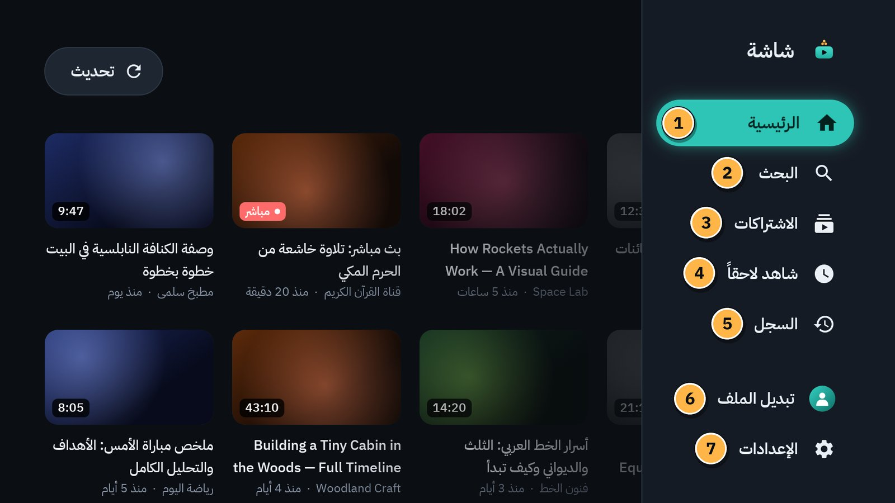
الرئيسية: أحدث فيديوهات قنواتك.
البحث في يوتيوب.
الاشتراكات: قنواتك.
شاهد لاحقاً: ما حفظته.
السجل: ما شاهدته.
تبديل الملف.
الإعدادات.
في ملف الطفل القائمة أقصر: الرئيسية، والقنوات المسموحة، وخروج.
كتيّب شاشةللجميع
المشاهدة
الرئيسية
لا اقتراحات ولا «شائع»: فيها أحدث ما نشرته القنوات التي اشتركت فيها أنت، من الأحدث إلى الأقدم. فقط.
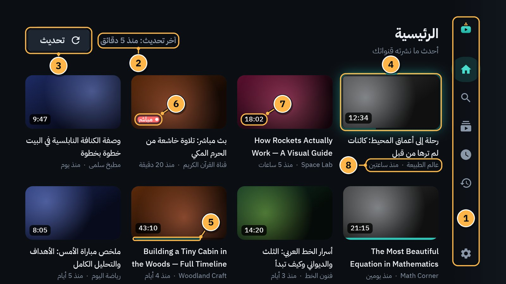
القائمة الجانبية: اضغط → لتفتحها.
«آخر تحديث»: متى جُلبت أحدث الفيديوهات.
تحديث: يجلب الجديد الآن.
البطاقة المختارة:OK لتشاهدها.
شريط المشاهدة: كم شاهدت من الفيديو.
«مباشر»: بث مباشر.
مدة الفيديو.
القناة، ومتى نُشر الفيديو.
كيف تتحدّث؟
وحدها كل ساعتين ما دام التلفاز متصلاً بالإنترنت، ومتى شئت بزر تحديث
تُجلب القنوات ثلاثاً ثلاثاً، ولا يبدأ التحديث أثناء تشغيل فيديو: هكذا لا يتقطّع الفيديو.
من كل قناة آخر 15 فيديو. ويُحفظ لكل قناة أحدث 30 فيديو، ولا شيء أقدم من 90 يوماً.
المقاطع القصيرة تُخفى أو تظهر حسب إعداد كل ملف. وملف الطفل له «رئيسية» خاصة بقنواته المسموحة.
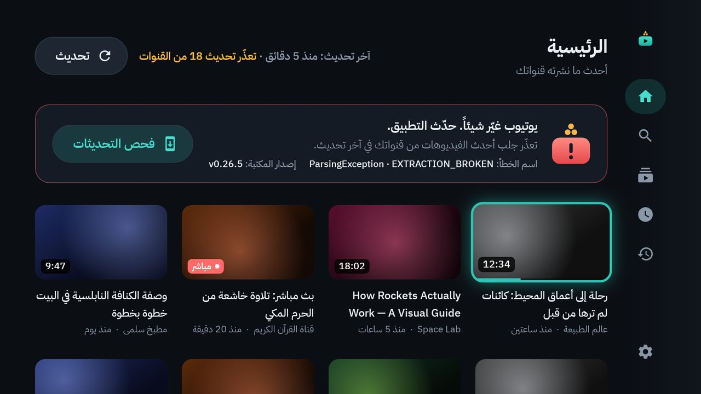
«تعذّر تحديث 18 من القنوات»
إن فشل جلب قنوات كثيرة تظهر هذه الرسالة فوق الفيديوهات، مع اسم الخطأ وزر فحص التحديثات. الفيديوهات القديمة تبقى. انظر «عندما يتعطل يوتيوب» (ص 25).
كتيّب شاشةللجميع
المشاهدة
الاشتراكات والاستيراد
«شاشة» لا يسجّل الدخول إلى يوتيوب، فاشتراكاتك محفوظة على التلفاز نفسه. تنقلها مرة واحدة من Google، أو تشترك في القنوات واحدة واحدة.
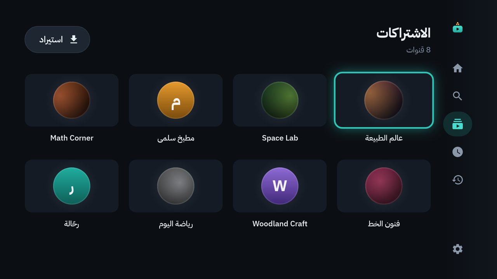
القائمة الجانبية ← الاشتراكات: قنواتك مرتبة بالاسم، وزر استيراد في الأعلى.
الاشتراك في قناة
ابحث عنها، ثم اضغط اشتراك بجانب نتيجتها، أو في صفحتها. يصير الزر مشترك، وتصل فيديوهاتها إلى «الرئيسية» خلال دقائق.
إلغاء الاشتراك
افتح صفحة القناة واضغط مشترك. تختفي فيديوهاتها من «الرئيسية». ومن الجوال: «الأب» ← «الاشتراكات»، وأيقونة الحذف بجانب القناة.
الاستيراد من Google Takeout
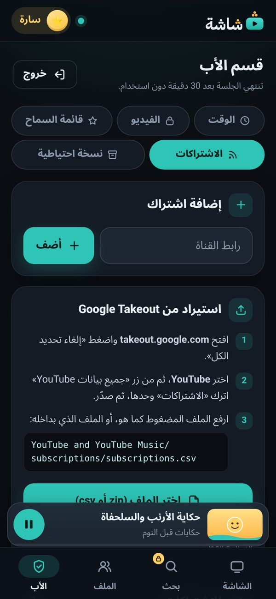
من الجوال: الأسهل.
أولاً: صدّر الملف (من حاسوب أو جوال)
افتح takeout.google.com بحساب غوغل الذي فيه اشتراكاتك.
«إلغاء تحديد الكل» (Deselect all)، ثم حدّد «YouTube and YouTube Music» وحده.
زر «All YouTube data included»: أبقِ «الاشتراكات» (subscriptions) وحدها، ثم OK.
«Next step»، ثم التصدير مرة واحدة بملف zip، ثم «Create export». يصلك بريد برابط التنزيل.
ثانياً: أدخله إلى «شاشة»
من الجوال: «الأب» ← «الاشتراكات» ← «استيراد من Google Takeout» ← «اختر الملف (zip أو csv)». ارفع الملف المضغوط كما هو.
من التلفاز: الإعدادات ← الاستيراد والتصدير ← استيراد الاشتراكات من Takeout: من ملف على الشاشة، أو من حاسوبك عبر ADB.
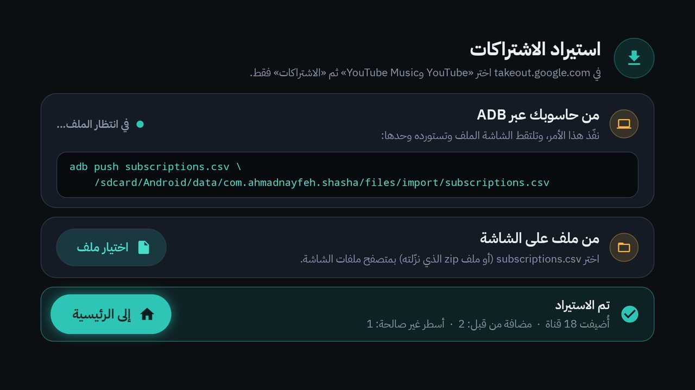
النتيجة: «تم الاستيراد» وعدد القنوات. إعادة الاستيراد آمنة، والقنوات لا تتكرر.
كتيّب شاشةللجميع
المشاهدة · ملف الكبار
البحث والقنوات وقوائم التشغيل
البحث في ملف الكبار فقط. وما تحظره أو تخفيه لا يظهر في النتائج أصلاً.
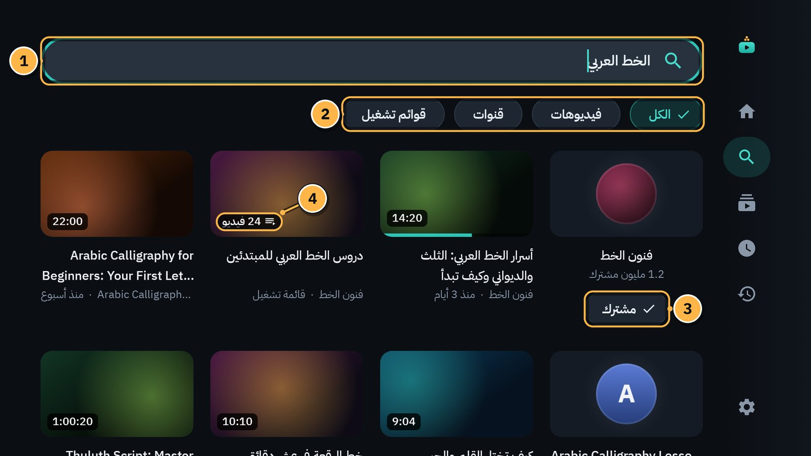
البحث
الخانة:OK تُظهر لوحة مفاتيح التلفاز. اكتب، ثم زر البحث فيها.
النوع:الكل أو فيديوهات أو قنوات أو قوائم تشغيل
اشتراك / مشترك بجانب كل قناة.
قائمة تشغيل: عليها عدد فيديوهاتها.
الكتابة أسهل من الجوال: تبويب «بحث» (ص 16).
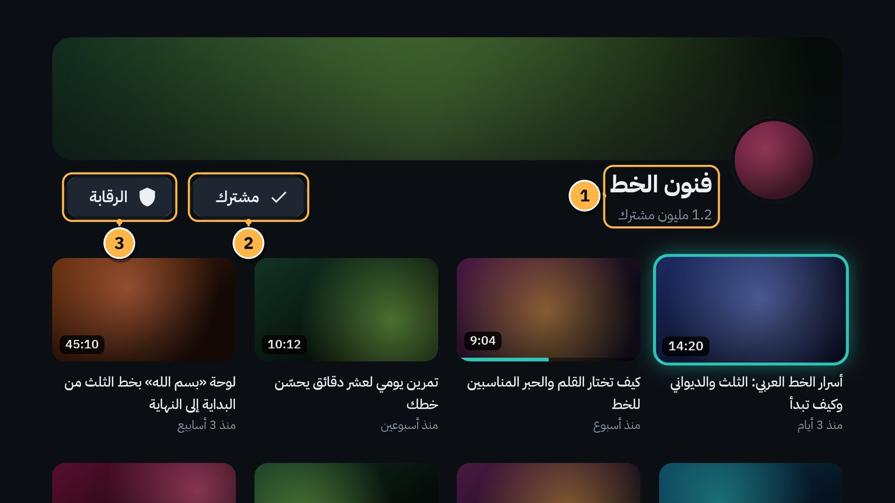
صفحة القناة
اسم القناة وعدد مشتركيها.
مشترك: اضغطه لتلغي الاشتراك، أو اشتراك لتشترك.
الرقابة: أضف القناة إلى قائمة سماح طفل، أو احظرها (برمز الوالدين).
تحت الرأس فيديوهاتها، الأحدث أولاً. انزل لتُحمَّل أقدم.
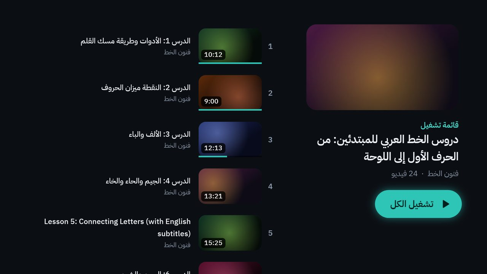
قائمة التشغيل
تشغيل الكل يبدأ من أول فيديو، أو اضغط OK على أي فيديو لتبدأ منه. بعد كل فيديو يبدأ التالي وحده بعد عدّ تنازلي قصير.
وفيها زر الرقابة أيضاً، لتسمح بالقائمة كلها لطفل.
ما ليس في «شاشة»، عمداً
لا «مقترح لك»، ولا «شائع»، ولا فيديوهات ذات صلة، ولا تعليقات، ولا تشغيل تلقائي إلا داخل قائمة تشغيل. ولا تعمل الفيديوهات الخاصة ولا المقيّدة بالعمر ولا المدفوعة: «شاشة» لا يسجّل الدخول.
كتيّب شاشةللجميع
المشاهدة
المشغّل
اضغط OK على أي فيديو. تبدأ الجودة تلقائية حتى 1080p، وتهبط وحدها حين تضعف الشبكة. تظهر الأدوات بأول ضغطة، وتختفي بعد ثلاث ثوانٍ.
معاينة أو تلخيص · تحية أو تشويق · استطراد · جزء غير موسيقي
الإعدادات ← فئات SponsorBlock. الفئات واحدة لكل الملفات. ولا تخطي في البث المباشر.
خصوصية: لا يُرسل رقم الفيديو، بل أول أربعة أحرف من بصمته فقط.
بيانات التخطي من SponsorBlock (sponsor.ajay.app)، مرخّصة CC BY-NC-SA 4.0: Uses SponsorBlock data licensed used under CC BY-NC-SA 4.0 from https://sponsor.ajay.app/.
كتيّب شاشةللجميع
ملف الكبار
الإعدادات
القائمة الجانبية ← الإعدادات. لوحتان: القائمة على اليمين، ولوحة العنصر المختار بجانبها. ↑↓ بين العناصر، وOK أو ← إلى اللوحة، و→ أو BACK للعودة.
2 · «جارٍ تنزيل الإصدار الجديد…». لا تُطفئ التلفاز.
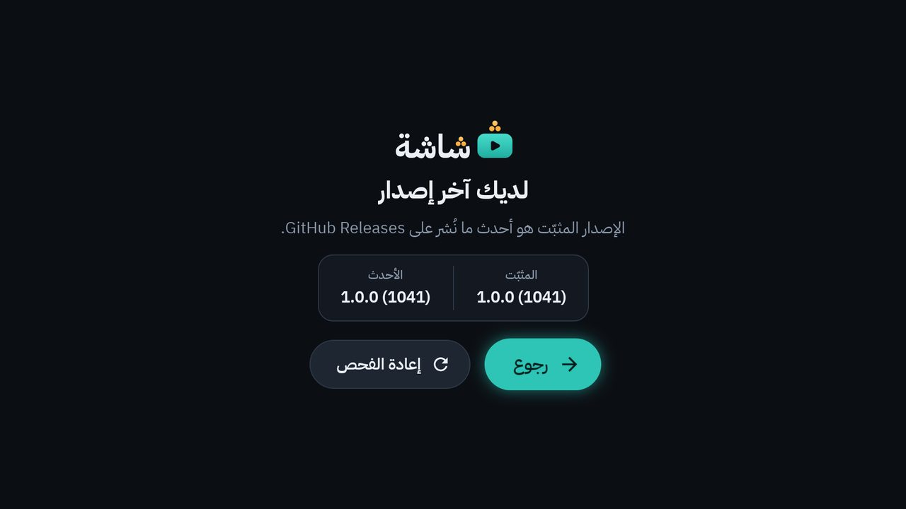
أو: «لديك آخر إصدار».
3 · «أكّد التحديث في نافذة النظام»: وافق في نافذة أندرويد بالريموت. بعد التثبيت تُغلق «شاشة»، فافتحها من جديد. لا يوجد تحديث صامت على أندرويد.
رسائل مثل «تثبيت التحديثات غير مسموح بعد» أو «رمز القراءة مرفوض»: حدّث من الحاسوب ببرنامج التثبيت، وأخبر صاحب البيت. و«مفتاح التوقيع مختلف»: لا تثبّت.
كتيّب شاشةللجميع
الجوال
الجوال ريموتاً
صفحة ويب على شبكة البيت، تفتحها من متصفح الجوال: ترسل منها الروابط، وتبحث، وتتحكم بالتشغيل، وتبدّل الملف. وللوالدين فيها «قسم الأب». لا تطبيق تثبّته.
الاقتران (مرة واحدة)
الجوال على شبكة Wi-Fi نفسها التي عليها التلفاز.
على التلفاز: الإعدادات ← الخادم المحلي. تأكد أن تشغيل الخادم مفعّل، وأن اللوحة تقول «يعمل على …».
اختر رمز الاقتران QR، واكتب رمز الوالدين. تفتح شاشة «التحكم من الجوال».
امسح الرمز بكاميرا الجوال، وافتح الرابط. تفتح صفحة «شاشة». (والرمز نفسه في آخر خطوة من أول تشغيل.)
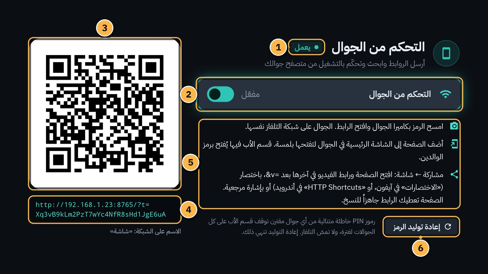
الحالة: «يعمل»، أو «متوقف»، أو «لا شبكة محلية».
التحكم من الجوال: تشغيل وإيقاف.
رمز QR: امسحه بكاميرا الجوال.
الرابط مكتوباً، إن لم تعمل الكاميرا.
نصائح: المسح، والإضافة إلى الشاشة الرئيسية، و«مشاركة ← شاشة».
إعادة توليد الرمز: يلغي اقتران كل الجوالات.
أضف الصفحة إلى الشاشة الرئيسية للجوال
آيفون (Safari): زر المشاركة ← «إضافة إلى الشاشة الرئيسية». أندرويد (Chrome): القائمة ⋮ ← «إضافة إلى الشاشة الرئيسية». تظهر أيقونة «شاشة» وتفتح بلمسة، والصفحة تتذكّر الاقتران.
كتيّب شاشةللجميع
أقسام الصفحة
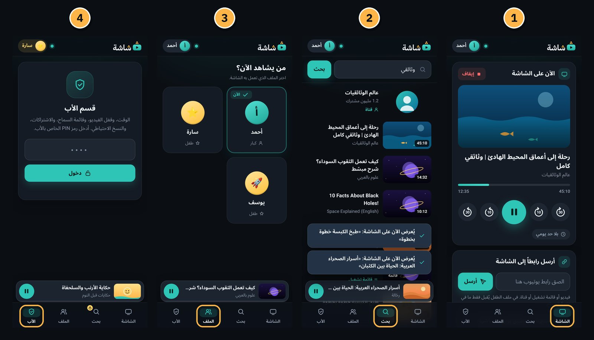
الشاشة: ما يُعرض الآن، والتحكم فيه، وإرسال رابط.
بحث: ابحث من الجوال، والنتيجة على التلفاز. (لا بحث في ملف الطفل.)
الملف: «من يشاهد الآن؟»: بدّل ملف التلفاز. الخروج من ملف طفل، والانتقال إلى ملف الكبار: برمز الوالدين.
الأب: «قسم الأب»، برمز الوالدين (الصفحة التالية).
تبويب «الشاشة»
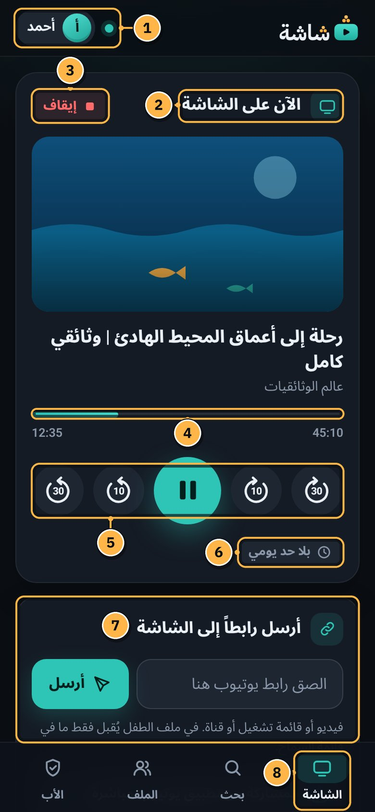
الملف المفتوح على التلفاز. والنقطة بجانبه: الجوال متصل.
«الآن على الشاشة»: الفيديو المعروض.
إيقاف: يغلق الفيديو، إلا إن كان مقفولاً.
شريط التقدّم والوقت.
التحكم: رجوع 30 و10 ثوانٍ، تشغيل / إيقاف مؤقت، تقديم 10 و30 ثانية.
الوقت الباقي: «متبقٍ 38 دقيقة» أو «بلا حد يومي».
«أرسل رابطاً إلى الشاشة»: الصق رابط فيديو أو قائمة تشغيل أو قناة، ثم أرسل
التبويبات.
الجوال لا يتجاوز الرقابة
ما دام ملف طفل مفتوحاً على التلفاز، يُرفض الرابط من خارج قائمة سماحه، ولا بحث. وعند «انتهى الوقت» لا يُقبل أي رابط. وأثناء فيديو مقفول لا يُفتح رابط جديد.
كتيّب شاشةللجميع
قسم الأب
اضغط الأب، واكتب رمز الوالدين، ثم دخول. تنتهي الجلسة بعد 30 دقيقة دون استخدام، أو بزر خروج
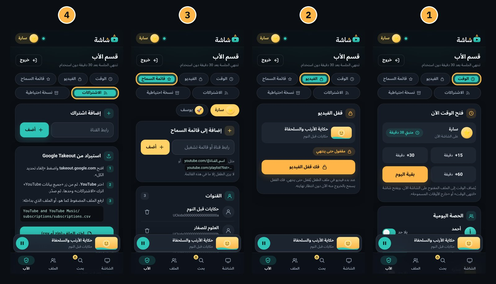
الوقت: «فتح الوقت الآن» (+15 أو +30 أو +60 دقيقة، أو «بقية اليوم») للملف المفتوح. و«الحصة اليومية» لكل ملف.
الفيديو:فك قفل الفيديو
قائمة السماح: اختر الطفل، والصق رابط قناة أو قائمة تشغيل، ثم أضف
الاشتراكات: «إضافة اشتراك» برابط، و«استيراد من Google Takeout»، وقائمة قنواتك.
والتبويب الخامس «نسخة احتياطية»: تنزيل النسخة واستعادتها (ص 14).
لرمز الجوال عدّاده الخاص
خمسة رموز خاطئة من الجوال توقف قسم الأب 5 دقائق، ثم 15 دقيقة، ثم ساعة، ثم 4 ساعات. ولا يتأثر بها رمز التلفاز، والعكس. والعدّاد واحد لكل الجوالات المقترنة: إن أوقفه جوال يخمّن، فـ إعادة توليد الرمز على التلفاز تنهي ذلك.
مشاركة ← شاشة
في تبويب الشاشة افتح «المشاركة من تطبيق يوتيوب مباشرة»: فيها رابط جاهز ينتهي بـ &v=، وزر نسخ
ضع بعد &v= أي رابط يوتيوب وافتحه: يُعرض على التلفاز وحده، ويحفظ وقت البداية إن كان فيه.
اجعله اختصاراً للمشاركة: «الاختصارات» (Shortcuts) في آيفون، أو «HTTP Shortcuts» في أندرويد، أو إشارة مرجعية.
وإن وصل رابط دون رمز الاقتران تسأل الصفحة: «إرسال هذا الرابط إلى الشاشة؟». أرسله فقط إن كنت أنت من شاركه.
لا تعمل الصفحة؟
«امسح رمز QR من جديد»: أُعيد توليد الرمز أو تغيّر عنوان التلفاز. «تعذّر الوصول إلى الشاشة»: تأكد أن «شاشة» يعمل، وأن الجوال على الشبكة نفسها.
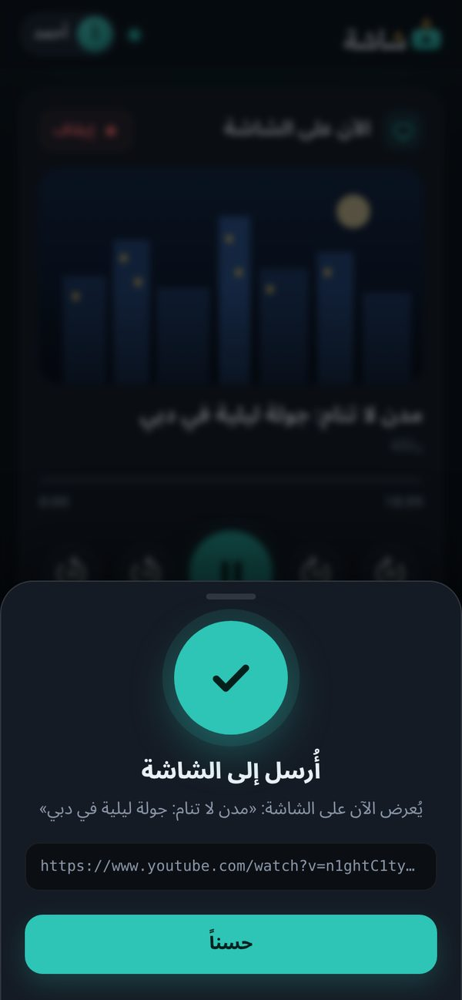
«أُرسل إلى الشاشة»
كتيّب شاشةركن الوالدين
ركن الوالدين
الملفات وملف الطفل
ملف للكبار يُفتح برمز الوالدين، وملف لكل طفل يدخله بلا رمز ويخرج منه بالرمز. لكل طفل قائمة سماحه وحصته وأوقاته وإحصائياته.
إلى ملف طفل: القائمة الجانبية ← تبديل الملف ← اختر الطفل.
من ملف الطفل:خروج ← رمز الوالدين ← اختر ملفاً. (لا يُطلب الرمز مرة ثانية لملف الكبار.)
ملف الكبار يُقفل وحده: إن غبت عنه أكثر من 15 ثانية وفي البيت ملف طفل، يُطلب الرمز عند العودة.
ما لا يستطيعه ملف الطفل، عمداً
لا بحث، ولا لوحة مفاتيح في أي مكان.
لا شيء خارج قائمة سماحه، ولو برابط من الجوال.
لا إعدادات، ولا قوائم بطاقات.
لا خروج من فيديو قبل نهايته إلا بالرمز.
لا تطبيقات أخرى: الحارس يعيد «شاشة» (ص 23).
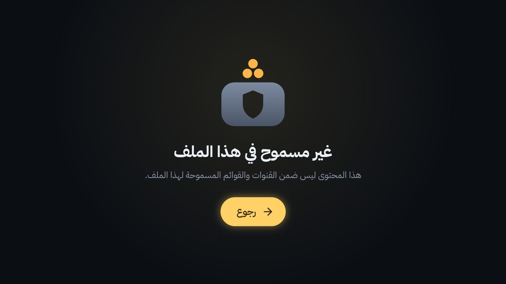
ما ليس مسموحاً يظهر رسالة هادئة بدل الفيديو.
يريد أحد الكبار تطبيقاً آخر؟
Netflix أو إعدادات التلفاز مثلاً: اخرج أولاً من ملف الطفل (خروج ورمز الوالدين) واختر ملف الكبار. بعدها يعمل كل شيء كالمعتاد.
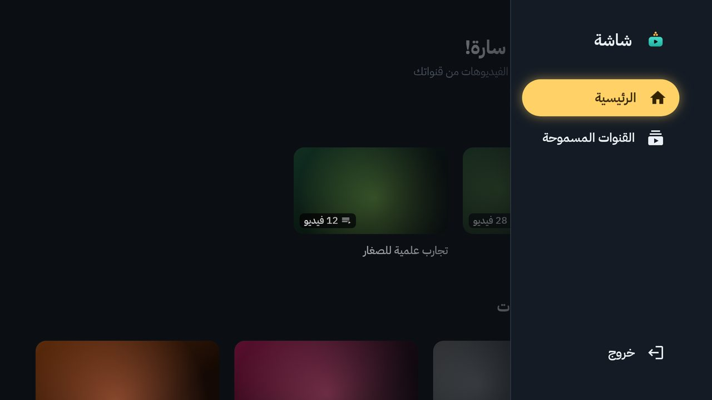
قائمة الطفل: الرئيسية، والقنوات المسموحة، وخروج.«القنوات المسموحة»: قنواته وقوائمه.
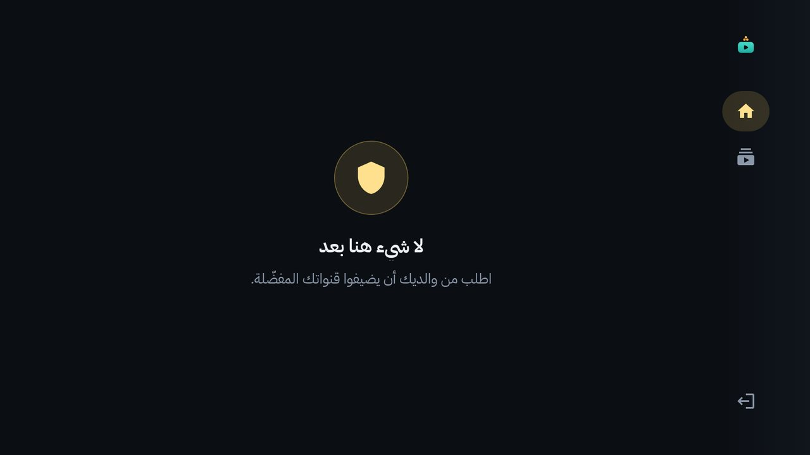
قائمة سماح فارغة: «لا شيء هنا بعد».
كتيّب شاشةركن الوالدين
ركن الوالدين
إدارة الملفات ورمز الوالدين
الإعدادات ← الملفات ورمز الوالدين ← فتح برمز الوالدين ← إدارة الملفات
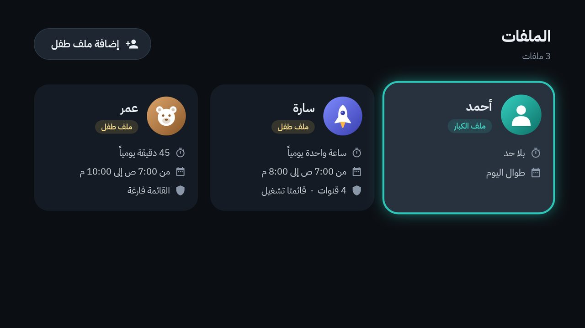
الملفات: بطاقة لكل ملف بحصته وأوقاته وقائمة سماحه. إضافة ملف طفل في الأعلى.
إضافة ملف طفل
اختر إضافة ملف طفل
«ملف طفل جديد»: الاسم، والصورة.
ثم إنشاء
يبدأ بساعة يومياً بين 7 صباحاً و10 مساءً، بلا مقاطع قصيرة، وبقائمة سماح فارغة تملؤها أنت.
تعديل ملف
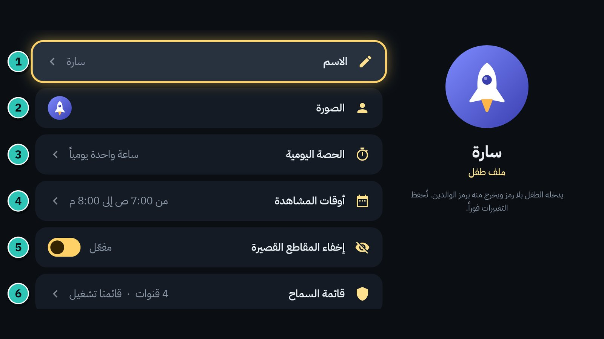
الاسم.
الصورة.
الحصة اليومية (ص 21).
أوقات المشاهدة (ص 21).
إخفاء المقاطع القصيرة.
قائمة السماح (ص 20).
تُحفظ التغييرات فوراً. وفي آخر الصفحة حذف الملف: يحذف سجله وإحصائياته أيضاً، ولا تراجع.
المقطع القصير عند «شاشة»: مدته 3 دقائق أو أقل، أو رابطه فيه /shorts/، أو يعلّمه يوتيوب مقطعاً قصيراً.
رمز الوالدين
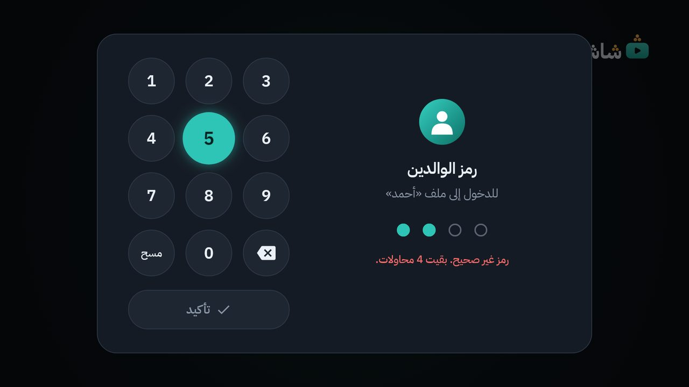
لوحة الرمز: الأرقام من الريموت أو بالأسهم، ثم تأكيد
تغييره: الإعدادات ← الملفات ورمز الوالدين ← تغيير رمز الوالدين: الرمز الحالي أولاً، ثم الجديد مرتين.
الأخطاء: تقول اللوحة كم محاولة بقيت. خمس محاولات خاطئة توقفه 5 دقائق، ثم 15، ثم ساعة، ثم 4 ساعات، ولا تنهيها إعادة التشغيل. ولرمز الجوال عدّاد مستقل.
نسيته؟ لا يوجد «نسيت الرمز» داخل التطبيق، عمداً: لو وُجد لاستعمله الأطفال. الحل من الحاسوب الذي ثبّت «شاشة» (ص 27).
كتيّب شاشةركن الوالدين
ركن الوالدين
قوائم السماح والحظر
الإعدادات ← قوائم السماح والحظر (برمز الوالدين).
قائمة السماح
قائمة الحظر
لمن؟
لكل طفل قائمته
للبيت كله: كل الملفات، والكبار أيضاً
ماذا فيها؟
قنوات وقوائم تشغيل تختارها أنت
قنوات، وكلمات في العنوان
النتيجة
لا يرى الطفل إلا ما فيها
لا يظهر ما فيها لأحد
أربع طرق للسماح بقناة
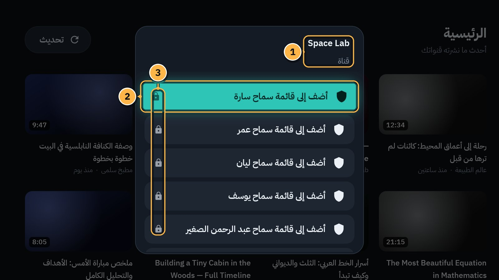
من اشتراكاتك: قائمة سماح الطفل ← من اشتراكاتي
قائمة البطاقة:OK مطوّلاً على بطاقة قناة أو قائمة أو فيديو.
زر الرقابة في صفحة القناة أو القائمة.
من الجوال: «الأب» ← «قائمة السماح».
القناة أو القائمة.
أضف إلى قائمة سماح … لكل طفل.
القفل: يطلب رمز الوالدين.
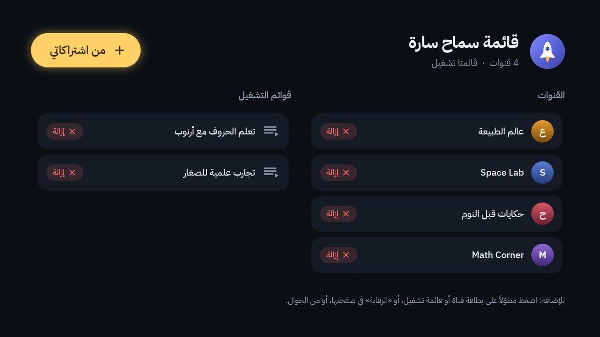
قائمة سماح طفل: القنوات وقوائم التشغيل، وبجانب كلٍّ إزالة
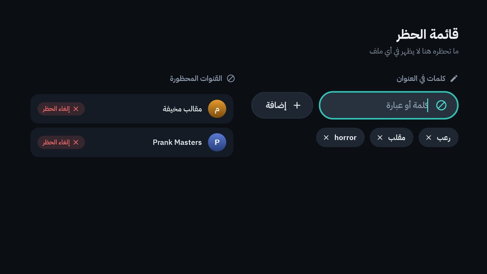
قائمة الحظر: اكتب كلمة ثم إضافة. وOK على كلمة يزيلها. والقنوات المحظورة بجانبها إلغاء الحظر
قائمة تشغيل مسموحة تعمل كل فيديوهاتها داخلها. أما رابط فيديو (من الجوال مثلاً) فيُحكم عليه بقناة الفيديو نفسه. وتُحظر القناة من قائمة بطاقتها ← حظر القناة
ابدأ صغيراً
قنوات قليلة تثق بها، ثم أضف مع الوقت. والقائمة الفارغة تعني أن الطفل لا يرى شيئاً.
ماذا يرى من يصل إلى محظور؟
لا يظهر في «الرئيسية» ولا البحث. وبرابط: رسالة هادئة مثل «قناة محظورة» أو «غير مسموح في هذا الملف»، مع رجوع
كتيّب شاشةركن الوالدين
ركن الوالدين
الوقت: الحصة وأوقات المشاهدة
لكل ملف حصة يومية بالدقائق، وأوقات مشاهدة من ساعة إلى ساعة. قبل النهاية بخمس دقائق تنبيه هادئ، وعند النهاية تتوقف المشاهدة حتى يفتحها الوالدان.
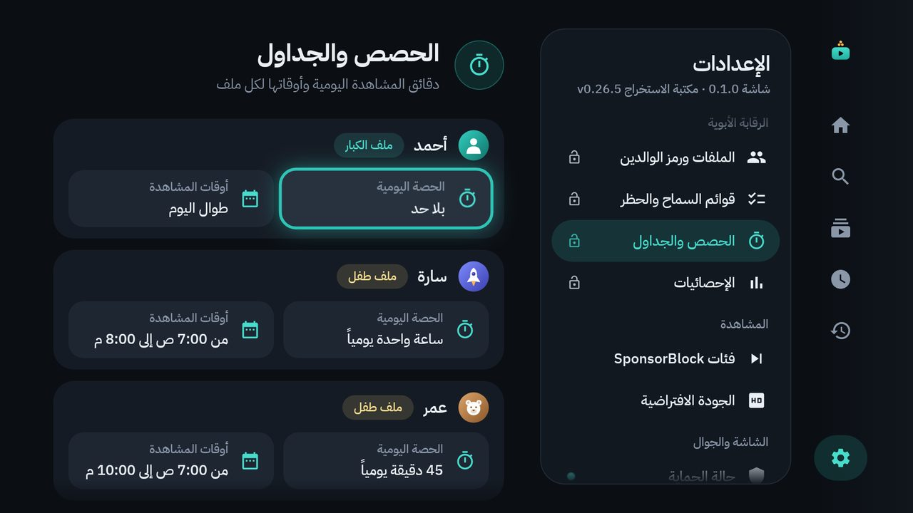
الإعدادات ← الحصص والجداول: الحصة: بلا حد، أو من 15 إلى 240 دقيقة.
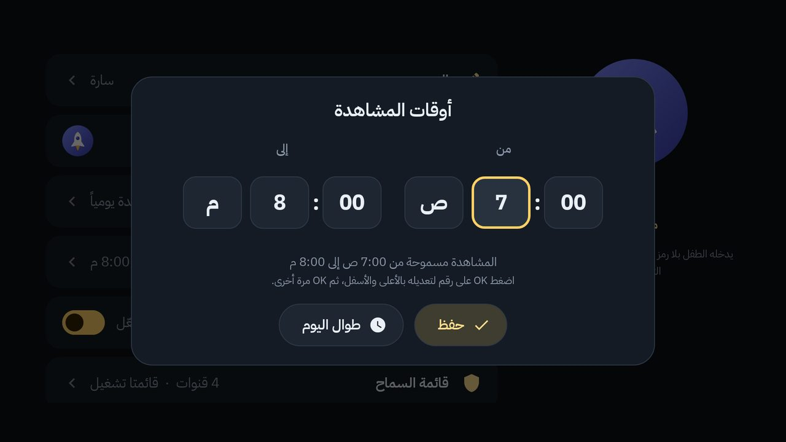
أوقات المشاهدة:OK على الرقم، ثم ↑↓، ثم OK. ثم حفظ، أو طوال اليوم
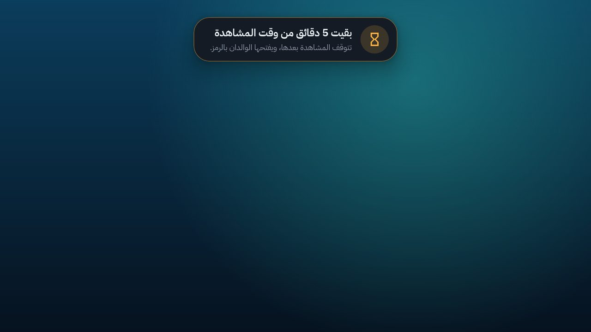
قبل خمس دقائق: «بقيت 5 دقائق من وقت المشاهدة». لا يوقف الفيديو.
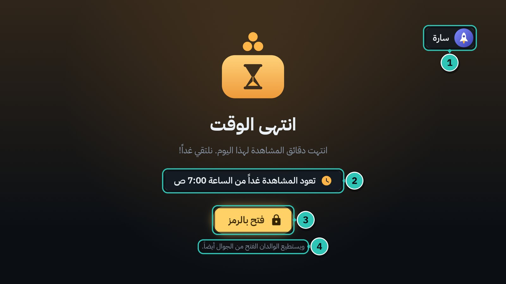
لمن انتهى الوقت.
متى تعود المشاهدة.
فتح بالرمز
والفتح من الجوال أيضاً.
«كم تضيف؟» بعد الرمز: +15 أو +30 أو +60 دقيقة، أو بقية اليوم. أو تبديل الملف دون وقت.
الدقائق تُحسب ما دامت شاشات الملف ظاهرة، لا على «انتهى الوقت» ولا على «من يشاهد الآن؟». وتبدأ الحصة من جديد كل يوم.
خارج الساعات المسموحة تظهر «خارج أوقات المشاهدة»: «حان وقت الراحة…». وتُفتح بالطريقة نفسها.
من الجوال: «الأب» ← «الوقت» ← «فتح الوقت الآن».
ساعة التلفاز
الحصة والأوقات تتبع ساعة التلفاز. أبقِ «الوقت التلقائي» مفعّلاً في إعدادات التلفاز، وإلا غيّرهما من يغيّر الساعة.
كتيّب شاشةركن الوالدين
ركن الوالدين
قفل الفيديو
كل فيديو يبدأ مقفولاً حتى ينتهي، وكذلك قائمة التشغيل. تختار بتأنٍّ، ثم تكمل ما بدأت. القفل يبقى بعد إعادة تشغيل التلفاز، والتقديم إلى النهاية لا يفكّه.
في ملف الطفل: الخروج برمز الوالدين
BACK لا يُخرج الطفل من الفيديو، بل تظهر «الخروج يحتاج رمز الوالدين». إن كتب أحد الوالدين الرمز خرج الطفل، وBACK مرة أخرى يعيده إلى الفيديو. وحين ينتهي الفيديو وحده يعود الطفل إلى «الرئيسية».
في ملف الكبار: عشر ثوانٍ ثم جملة
1 · ضغطة قصيرة على BACK تُظهر التذكير فقط.2 · اضغط مطوّلاً على BACK أو OK عشر ثوانٍ. أفلته لتبقى.3 · اكتب الجملة الظاهرة بلوحة «شاشة»، ثم خروج
4 · يُسجَّل «استسلاماً»
«خرجت قبل نهاية الفيديو، وسُجّل ذلك استسلاماً.» ويظهر العدد في الإحصائيات. الجملة تتغير كل مرة، مثل «الصبر مفتاح الفرج». والزر متابعة المشاهدة يعيدك إلى الفيديو.
من الجوال
«الأب» ← «الفيديو» ← فك قفل الفيديو. في ملف الكبار يُسجَّل ذلك استسلاماً أيضاً. وأثناء القفل: لا فيديو آخر، ولا رابط جديد، ولا استعادة نسخة؛ أما الإيقاف المؤقت والتقديم فيعملان.
جملة غير مطابقة: «الجملة غير مطابقة. اكتبها كما تظهر تماماً.»التقديم إلى النهاية: «الوصول إلى النهاية بالتقديم لا يُنهي القفل: الفيديو ما زال مقفلاً.»
كتيّب شاشةركن الوالدين
ركن الوالدين
الحارس و«حالة الحماية»
زر HOME لا يمنعه تطبيق عادي. لذلك في «شاشة» حارس: إن ظهر تطبيق آخر في وقت ممنوع غطّاه فوراً بـ «لحظة… نعود إلى «شاشة»»، وأعاد «شاشة» خلال ثانية أو ثانيتين.
متى يتدخل؟
ما دام ملف طفل مفتوحاً، في أي شاشة منه.
أثناء فيديو مقفول، في أي ملف.
عند «انتهى الوقت»، وخارج أوقات المشاهدة.
وفي غير ذلك ملف الكبار حر.
ماذا يحتاج؟
صلاحيتين يمنحهما المثبّت: «العرض فوق التطبيقات» و«الوصول إلى بيانات الاستخدام». ثم يعمل وحده، ويعود بعد كل إعادة تشغيل للتلفاز.
اخرج إلى ملف الكبار ← الإعدادات ← حالة الحماية: «آخر عودة إلى «شاشة» بعد Home».
التفاصيل وأوامر ADB ← «سرعة العودة»: كل عودة، وزمنها، ومن أي تطبيق.
القفل ليس منيعاً
لا يمنع الحارس الأزرار نفسها، ولا مصدر HDMI، ولا فصل الكهرباء، ولا إعادة ضبط المصنع، ولا أوامر الحاسوب. وفي ملف الكبار يصل الممسك بالريموت إلى إعدادات التلفاز: لا تتركه مفتوحاً للأطفال.
مخرج الطوارئ
إن قُفل الرمز أو نُسي، يبقى التلفاز على «شاشة». المخرج الأخير من الحاسوب الذي ثبّتها: أمر مكتوب في «حدود الحماية».
كتيّب شاشةركن الوالدين
ركن الوالدين
الإحصائيات
دقائق المشاهدة كما هي: بلا نقاط، ولا أوسمة، ولا سلاسل أيام. الإعدادات ← الإحصائيات ← التفاصيل
الملف الذي تعرض إحصائياته.
آخر 7 أيام: عمود لكل يوم.
اليوم ودقائقه.
هذا الأسبوع: المجموع.
المقارنة بالأسبوع الماضي.
الاستسلام هذا الأسبوع.
أكثر القنوات مشاهدة.
ملف له حصة: خط متقطّع عند الحصة، فترى الأيام التي اقتربت منها.في لوحة الإعدادات: اليوم وهذا الأسبوع لكل ملف. والأرقام على التلفاز وحده، لآخر 90 يوماً تقريباً.
قائمة مراجعة للوالدين
رمز والدين تعرفه أنت وحدك.
ملف لكل طفل، وقائمة سماح فيها قنوات تثق بها.
حصة يومية وأوقات مشاهدة مناسبة لكل طفل.
«إخفاء المقاطع القصيرة» حسب رغبتك.
«حالة الحماية» تقول «الحماية تعمل»، و«الوقت التلقائي» مفعّل.
جوالك مقترن، والصفحة على شاشته الرئيسية.
نسخة احتياطية حديثة خارج التلفاز.
لا يُترك ملف الكبار مفتوحاً للأطفال.
كتيّب شاشةعند الحاجة
عند الحاجة
عندما يتعطل يوتيوب
سيحدث، وليس ذنبك: يوتيوب يغيّر طريقة عمله كل شهر إلى ثلاثة أشهر، فيتعطل «شاشة» حتى يصدر إصلاح. لذلك يظهر العطل بوضوح، لا بصمت.
العنوان: «يوتيوب غيّر شيئاً. حدّث التطبيق.» (أو «لا يوجد اتصال بالإنترنت»).
سطر يشرح المشكلة.
اسم الخطأ: ما يحتاجه صاحب البيت.
إصدار المكتبة التي تقرأ يوتيوب.
رجوع
فحص التحديثات: يبحث عن إصلاح.
النوع
ماذا يعني
ماذا تفعل
لا اتصال
لا إنترنت. ليس يوتيوب.
افحص الشبكة، ثم إعادة المحاولة
طلبات كثيرة
طلبات كثيرة في وقت قصير.
انتظر دقائق، ثم أعد المحاولة.
غير متاح
فيديو محذوف أو مخفي.
طبيعي لفيديو واحد.
خاص، مقيَّد بالعمر، مدفوع…
صفة في الفيديو نفسه.
طبيعي: «شاشة» لا يسجّل الدخول.
360p فقط
لم يعطِ يوتيوب إلا 360p.
متوقع لفيديوهات «للأطفال» (ص 12).
مرفوض 403، تحقّق روبوت، تعطّل الاستخراج
يوتيوب رفض أو غيّر شيئاً.
جرّب فيديو آخر، ثم فحص التحديثات
القاعدة: خطأ في فيديو واحد يخص ذلك الفيديو غالباً. والخطأ نفسه في كل فيديو يعني أن يوتيوب غيّر شيئاً.
«لا يوجد اتصال بالإنترنت»: المشكلة في الشبكة، لا في يوتيوب.فيديو محذوف: «هذا الفيديو غير متاح: ربما حُذف أو أخفاه صاحبه.»«الرئيسية» لم تُحدَّث: «تعذّر جلب أحدث الفيديوهات من قنواتك في آخر تحديث.»
كتيّب شاشةعند الحاجة
«تشخيص»: اعرف ما الذي تعطّل في ثوانٍ
من ملف الكبار: الإعدادات ← تشخيص ← فيديوهات تجريبية
خمسة فيديوهات ثابتة، لكل منها طريقة تعطّل مختلفة.
النتيجة: «يعمل · حتى 2160p»، أو «360p فقط»، أو «غير متاح»…
إعادة الفحص
تفاصيل المختار:OK يشغّله بلا قفل.
الصف
النتيجة الصحيحة الآن
عادي
«يعمل · حتى …p»
بث مباشر
«يعمل · بث مباشر»
للأطفال
«360p فقط»
محذوف
«غير متاح»: الخطأ هنا صحيح
SponsorBlock
«يعمل»، ويُتخطى إعلانه
إن فشل «عادي» بغير «لا اتصال»
فيوتيوب غيّر شيئاً. وفي لوحة تشخيص أيضاً «معلومات للتشخيص»: إصدار التطبيق والمكتبة، ونوع التلفاز، وحالة تحديث الاشتراكات وآخر خطأ.
ماذا تفعل؟
جرّب فيديو آخر. إن عمل، فالمشكلة في الأول وحده.
«لا يوجد اتصال بالإنترنت»؟ تأكد من Wi-Fi التلفاز، ثم إعادة المحاولة
اضغط فحص التحديثات إن وُجد إصدار جديد فثبّته (ص 14).
انتظر قليلاً. الإصلاح يأتي عادةً خلال أيام، ويصل بـ «فحص التحديثات». ولا تحاول تسجيل الدخول بحساب غوغل: «شاشة» لا يسجّل الدخول أبداً.
لصاحب البيت: الخطوات التقنية في MAINTENANCE.md: رفع إصدار مكتبة NewPipeExtractor، والاختبار، ونشر إصدار جديد.
كتيّب شاشةعند الحاجة
عند الحاجة
أسئلة شائعة
أجوبة قصيرة. والتفصيل في «دليل استخدام شاشة».
هل يحتاج «شاشة» حساب غوغل؟
لا، أبداً. اشتراكاتك محفوظة على التلفاز نفسه.
هل فيه إعلانات؟
لا تظهر إعلانات يوتيوب. والإعلان الذي يقرؤه صاحب القناة يُتخطى وحده غالباً (SponsorBlock).
لماذا لا أرى «مقترح لك»؟
عمداً: «شاشة» يعرض ما تختاره أنت فقط، ولا يبدأ فيديو وحده إلا داخل قائمة تشغيل.
«الرئيسية» فارغة
استورد اشتراكاتك من Google Takeout، أو اشترك في قناة من البحث. ثم انتظر دقائق، أو اضغط تحديث
الفيديو يتقطّع
تأكد من قوة Wi-Fi. واخفض الحد: الإعدادات ← الجودة الافتراضية ← «تلقائي حتى 720p».
لماذا شارة «360p»؟
فيديو مصنّف «للأطفال»: يوتيوب لا يعطي «شاشة» له إلا 360p حالياً.
ضغطت BACK فلم يخرج الفيديو
الفيديو مقفول حتى ينتهي. الطفل: رمز الوالدين. الكبار: BACK مطوّلاً عشر ثوانٍ، ثم الجملة.
طفلي لا يرى قناة يحبها
أضفها إلى قائمة سماحه. أو هي محظورة، أو في عنوانها كلمة محظورة، أو مقاطع قصيرة مخفية في ملفه.
الطفل ضغط HOME فعادت «شاشة» وحدها!
هذا الحارس، وهو مقصود: ما دام ملف طفل مفتوحاً تبقى «شاشة» في الواجهة.
كيف أفتح Netflix أو إعدادات التلفاز؟
اخرج من ملف الطفل: خروج ← الرمز ← ملف الكبار.
انتهى الوقت ويحتاج الطفل دقائق
فتح بالرمز ← الرمز ← +15 مثلاً. أو من الجوال: «الأب» ← «الوقت».
«محاولات خاطئة كثيرة. حاول بعد …»
انتظر حتى ينتهي العدّ. المهلة تطول مع كل مرة. والجوال له عدّاد مستقل.
نسيت رمز الوالدين
لا يوجد «نسيت الرمز» في التطبيق، عمداً. الحل عند صاحب البيت من الحاسوب الذي ثبّت «شاشة»: حفظ النسخة، ومسح بيانات التطبيق، ورمز جديد، ثم استعادة الباقي. الخطوات في MAINTENANCE.md.
طلب «شاشة» الرمز حين عدت إليه
ملف الكبار يُقفل وحده بعد 15 ثانية من الغياب، إن كان في البيت ملف طفل.
صفحة الجوال لا تفتح
الشبكة نفسها؟ «شاشة» يعمل؟ تغيّر عنوان التلفاز؟ امسح رمز QR من جديد من «الخادم المحلي».
أرسلت رابطاً فلم يُعرض
الجوال يقول السبب: خارج قائمة السماح، أو انتهى الوقت، أو فيديو مقفول، أو «من يشاهد الآن؟» على التلفاز.
هل يبقى كل شيء بعد إعادة تشغيل التلفاز؟
نعم. والحارس وخادم الجوال يعودان وحدهما، والفيديو المقفول يعود كما كان.
كيف أعيد يوتيوب الرسمي؟
شغّل المثبّت من الحاسوب بخيار التراجع، كما في «دليل التثبيت». يعيد يوتيوب ويوقف الحارس، ويبقى «شاشة» ببياناته.
كيف أحذف «شاشة»؟
احفظ نسخة احتياطية أولاً. ثم على التلفاز: Settings، ثم Apps، ثم «شاشة»، ثم Uninstall. الحذف يمسح كل بياناته.
كتيّب شاشةعند الحاجة
اقرأه مرة واحدة
تنبيه قانوني وخصوصية
«شاشة» يخالف شروط خدمة يوتيوب
صُنع للاستخدام الشخصي في هذا البيت فقط. لا تنشره ولا تبعه، ولا تعطِ ملف التطبيق ولا مجلد التثبيت لأحد، وأبقِ مستودعه على GitHub خاصاً.
القفل ليس منيعاً
القفل داخل «شاشة» مضمون: قفل الفيديو، وملف الطفل، وانتهاء الوقت. أما الحارس الذي يعيده إلى الواجهة فـ «أفضل جهد»، ويمكن تجاوزه، ومن ذلك:
تبديل مصدر الصورة (Input أو HDMI) إلى جهاز آخر.
فصل الكهرباء أو إعادة التشغيل: يعود الحارس بعد اكتمال التشغيل.
إعادة ضبط المصنع، أو أوامر من حاسوب مأذون له.
تغيير التاريخ والساعة يدوياً، إن أُطفئ ضبطهما التلقائي.
الثانية أو الثانيتان قبل أن يغطي الحارس تطبيقاً آخر.
منع ذلك كله يحتاج وضع «مالك الجهاز» (Device Owner)، وقد استُبعد عمداً. «شاشة» أداة تساعد الأسرة، لا بديل عن حضور الوالدين.
خصوصيتك
لا تسجيل دخول، ولا حسابات، ولا إعلانات، ولا تحليلات، ولا تتبّع.
كل البيانات على التلفاز نفسه، ولا تُرسل إلى أي خادم.
لا يتصل «شاشة» بالإنترنت إلا ليوتيوب، ولـ SponsorBlock (دون أن يعرف ماذا تشاهد)، ولـ GitHub حين تفحص التحديثات.
خادم الجوال على شبكة البيت وحدها، برمز اقتران.
الرخص والنسب
بيانات التخطي من SponsorBlock (sponsor.ajay.app)، مرخّصة CC BY-NC-SA 4.0.
الخط IBM Plex Sans Arabic، حقوقه لـ IBM، برخصة SIL OFL 1.1.
المكتبات مفتوحة المصدر، وأسماؤها ورخصها في الإعدادات ← حول ← «المكتبات ورخصها». أهمها NewPipeExtractor (GPL-3.0).
يوتيوب وGoogle TV علامتان تجاريتان لـ Google، و«شاشة» غير مرتبط بهما.
الإعدادات ← حول: التنبيه نفسه، ونسبة بيانات التخطي.«المكتبات ورخصها»: كل مكتبة، ودورها، ورخصتها.
يوتيوب لبيتك، بلا إعلانات ولا خوارزمية.
كتيّب شاشة · الطبعة الأولى · سبتمبر 2026 · الدليل الكامل في docs/manual